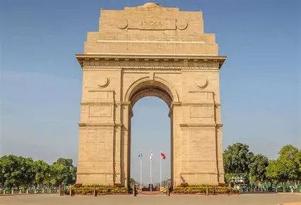

India
The India Gate was part of the work of the Imperial War Graves Commission, which came into existence in December 1917 under the British Raj rule for building war graves and memorials to soldiers who were killed in the First World War.[2] The foundation stone of the Gate, then called the All India War Memorial, was laid on 10 February 1921, at 4:30 p.m., by the visiting Duke of Connaught in a ceremony attended by officers and men of the Imperial Indian Army, Imperial Service Troops, the Commander-in-Chief, and Lord Chelmsford, the Viceroy.
Click here to know more